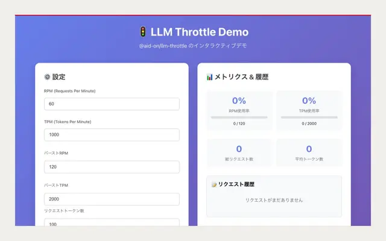

llm-throttle
LLM API向けにRPMとTPMを同時制御するレート制限ライブラリ
できること
- RPM・TPMの二重制限
- トークンバケットとバースト対応
- 実消費量による事後調整
モデルを実際に使うために要るもの。統一の窓口（unillm・almai・unisttp）、流量を抑える仕組み（llm-throttle・llm-queue-dispatcher）、長文と反復を扱う層（fractop・iteratop・synapser・templex）、記憶（memory-rag・whenm・embersm）、そして端末から使う CLI と、Mac を操作する手。
← 系統の一覧へ
LLM API向けにRPMとTPMを同時制御するレート制限ライブラリ
Almide製の、モジュール式AIエージェントCLIランタイム
エッジ環境向けに複数のLLMプロバイダを統一APIで扱うTypeScriptライブラリ
複数のLLMを端末から統一的に使えるCLIツール
文章から再利用可能な文章テンプレートを抽出し新規記事を生成するライブラリ
@aid-on/unillmをVercel AI SDKで使うためのLanguageModelV1互換ラッパー
ブラウザ向けの音声区間検出。Silero VADとRNNoise雑音抑制を統合
macOSの実デスクトップをClaudeに操作させるAlmide製エージェント
LLMエージェント処理を4フェーズに分ける型安全なTypeScriptパイプライン
Cloudflare Workers AIとGroqを統一的に扱うSTTプロバイダ